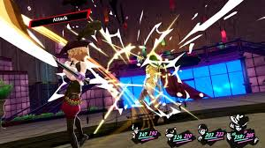

Persona 5 Royal es una versión extendida y mejorada de Persona 5, un juego de rol japonés (JRPG) desarrollado por Atlus. Lanzado inicialmente en 2016 para PlayStation 3 y PlayStation 4, Persona 5 Royal llegó en 2020 con nuevas características, contenido adicional y mejoras en la jugabilidad, convirtiéndolo en una de las entregas más aclamadas de la serie Persona.
¿De qué trata Persona 5 Royal?
La historia de Persona 5 Royal sigue al protagonista, conocido como Joker, un estudiante de secundaria que se traslada a Tokio después de ser injustamente acusado de un crimen. Durante su año escolar, Joker se une a un grupo de estudiantes que, bajo el alias de los Phantom Thieves of Hearts, se infiltran en las mentes de las personas corruptas a través de un mundo paralelo conocido como el Palacio. Los Phantom Thieves tienen el poder de cambiar los corazones de las personas, lo que resulta en la corrección de sus actitudes y comportamientos negativos.
El juego combina la vida cotidiana de un estudiante de secundaria en Tokio con exploración de mazmorras en el mundo cognitivo (Palacios) y batallas por turnos contra monstruos llamados Sombras. A lo largo de la historia, los jugadores deben formar relaciones con otros personajes, desarrollar sus habilidades, y descubrir secretos sobre la conspiración que se oculta en el mundo de los adultos.
